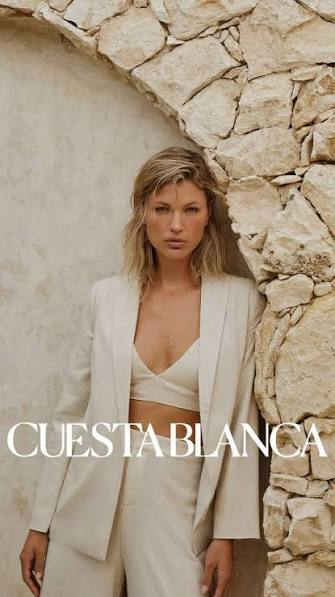
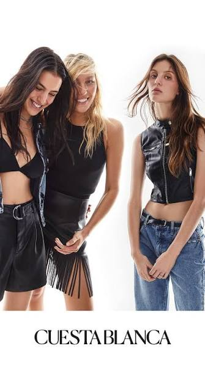
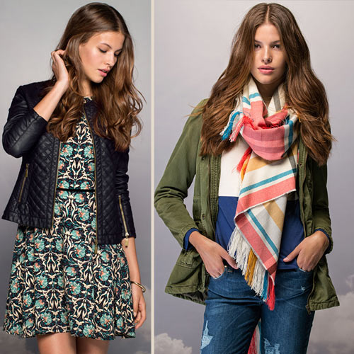

La inspiración está en todas partes. En las calles, en los colores, en las personas y en cada pequeño detalle que nos rodea. Cuesta Blanca transforma esas ideas en propuestas que invitan a crear y experimentar.
Cada look puede ser el comienzo de algo nuevo. Combiná prendas, descubrí nuevas tendencias y animate a crear una imagen que refleje tu personalidad y tu manera de ver la moda.


Cada prenda puede convertirse en una nueva idea. Explorá diferentes combinaciones, descubrí nuevas tendencias y encontrá inspiración en cada detalle.
La moda es una forma de expresarnos, descubrirnos y mostrar nuestra personalidad. Cada prenda, cada combinación y cada detalle puede convertirse en una oportunidad para crear algo único.
Inspirate, experimentá y hacé de cada look una expresión de quién sos.
